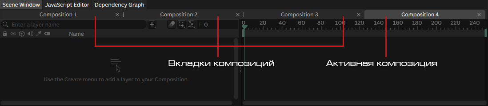
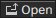

Композиция
Введение
Композиция (composition) - это сцена, в которой размещаются все слои.
Чтобы создать композицию, можно выполнить одно из действий:
- Нажать кнопку в нижней части Окна ассетов.
- Перетащить русурс в Окне ассетов на кнопку .
-
В главном меню выбрать
Composition ► New Compositionили нажатьCTRL+SHIFT+N.
Композиции можно создавать только этими способами. Её невозможно создать через Окно добавления слоёв!
Чтобы открыть композицию, дважды щёлкните по ней в Окне ассетов и она появится в виде новой вкладке Окна сцены.
Можно открыть несколько композиций одновременно, но только одна может быть установлена как активная. Используйте вкладки в верхней части Окна сцены, чтобы переключаться между открытыми композициями.

Заготовки композиции
Используйте заготовки композиции (composition presets), чтобы задать пользовательские значения по умолчанию для новой композиции (разрешение, частота кадров и.т.д.).
Настройки композиции
Общие настройки композиции отображаются, если перетащить композицию из Окна ассетов в Редактор трибутов:
| Атрибут | Описание |
|---|---|
| Resolution | Задаёт ширину и высоту композиции в пикселях. Используйте выпадающий список, чтобы выбрать одну из распространённых заготовок. |
| Frame Range | Задаёт номера кадров для начала и конца композиции. |
| Playback Range | Задаёт начальный и конечный кадры, используемые при воспроизведении. Это значение также можно установить с помощью «закладок» (полос с зелёными концами) в верхней части Временной шкалы. |
| Time | Показывает текущий кадр. Не принимает ввода, но может быть подключён к другим атрибутам — хотя Frame часто является лучшим решением в этом случае. |
| Frame Rate | Задаёт количество кадров в секунду, с которым будет воспроизводиться композиция. |
| Background | Задаёт цвет фона композиции с помощью значений HEX или RGB (примечание: анимировать можно только значения RGB). |
| Playback Step | Воспроизводить каждый n-й кадр. |
| Motion Blur | Включает/выключает размытие в движении. |
| Shutter Angle |
Задаёт угол затвора. Значение по умолчанию
180° даёт «плёночный вид».
То есть 50% от частоты кадров.
|
| Motion Blur Centre |
Определяет, направлено ли размытие назад или
вперёд от текущего кадра. Значение по умолчанию
0 центрирует его на кадре (размытие
будет равномерным в обоих направлениях движения).
|
| Blur Align |
Корректирует положение, из которого берутся
сэмплы размытия движения, относительно
Motion Blur Centre. Это можно использовать
для контроля за уровня размытия в начале
или конце анимации. Например, установка
Blur Align в -100
приведёт к отсутствию размытия, если форма
статична на предыдущем кадре.
|
| Motion Blur Samples | Определяет, сколько раз берётся сэмпл размытия движения. Большее число даёт более плавное размытие, но также снижает производительность. |
| Linear Gamma | Включает линейное цветовое пространство. |
| Keyframe Layer | Текущий активный Keyframe Layer. |
| Referenceable | Если отмечено, композиция будет отображаться в Окне ассетов, когда сцена импортируется как Ссылка. |
Прекомпоз
Прекомпоз (pre-comp) - это композиция, которая используется в качестве слоя в другой композиции.
Чтобы создать прекомпоз, можно выполнить одно из действий:
- Перетащить композицию из Окна ассетов в Окно просмотра или Окно сцены другой композиции.
-
Выбать несколько слоёв внутри существующей композиции
и затем:
-
Правый клик ► Pre-Compose Selection. -
Либо использовать главное меню
Composition ► Pre-Compose.
-
Чтобы отобразить свойства прекомпоза, перетащите этот слой из Окна сцены в Редактор атрибутов
| Атрибут | Описание |
|---|---|
| Position |
Задаёт положение композиции. 0,0 — центр.
|
| Rotation | Задаёт поворот композиции (в градусах). |
| Scale | Задаёт масштаб композиции. |
| Pivot | Определяет точку привязки композиции. Полезно при анимации поворота и масштаба. |
| Opacity | Задаёт прозрачность композиции. |
| Blend Mode | Задаёт режим смешивания. |
| Deformers | Список подключённых деформаторов. |
| Filters | Список подключённых фильтров. |
| Motion Blur | Включает размытие в движении. |
| Preserve Frame Rate | Если композиция используется как прекомпоз, включение этой опции сохранит её частоту кадров. Например, если композиция с 12 кадр./сек. является прекомпозом внутри композиции с 24 кадр./сек., включение Preserve Frame Rate гарантирует, что прекомпоз будет воспроизводиться с частотой 12 кадр./сек. Если опция выключена, Cavalry выполнит повторную интерполяцию частоты кадров, чтобы соответствовать частоте 24 кадр./сек. родительской композиции. |
Если прекомпоз уже существует в композиции, можно заменить его ссылку на другую композицию из Окна ассетов. Для этого нужно выполнить одно из действий:
-
Удерживая
Alt, перетащить композицию из Окна ассетов на строку прекомпоза в Окне сцены. -
Выбрать несколько прекомпозов в Окне сцены
и затем, удерживая
Alt, перетащите композицию из Окна ассетов в Окно сцены.
Открытие прекомпоза
Чтобы открыть прекомпоз и сделать его активной композицией для редактирования, можно выполнить одно из действий в Окне сцены:
-
Нажать кнопку

в правой части строки прекомпоза. -
Либо
CTRL+ALT+2х кликпо строке прекомпоза.